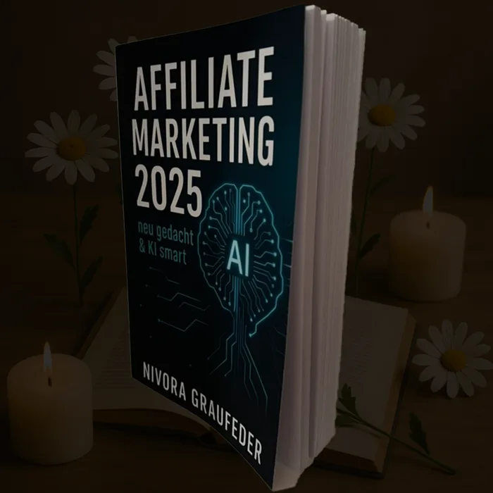

Zum BuchAffiliate Marketing verändert sich rasant – Künstliche Intelligenz bringt völlig neue Möglichkeiten. Dieses Buch zeigt dir, wie du 2025 smart, skalierbar und zukunftsorientiert durchstartest.
„Affiliate Marketing 2025 – Neu gedacht, KI-smart“ ist dein strategischer Leitfaden für intelligentes Online-Marketing im Zeitalter der Automatisierung. Mit leicht verständlichen Erklärungen, realen Beispielen und praktischen Tipps lernst du, wie du KI-Tools für dein Affiliate-Business effizient einsetzen kannst – auch als Einsteiger*in.
Was dieses Buch besonders macht:
- Grundlagen des Affiliate Marketings kompakt erklärt
- Einführung in KI-Tools wie Chatbots & Automatisierungen
- Strategien für skalierbaren Content & smarte Kampagnen
- Praxisbeispiele & Schritt-für-Schritt-Anleitungen
- Zukunftstrends für 2025 und darüber hinaus
Ideal für Anfänger*innen, Selbstständige und Content-Creator, die ihr Online-Einkommen auf ein neues Level bringen möchten – ohne kompliziertes Technik-Wissen, aber mit klarer Strategie.
✨ Dein Exemplar sichern
Hol dir jetzt deinen Praxis-Guide für das Affiliate Marketing von morgen – kompakt, verständlich und bereit für die KI-Zukunft.
🚀 Jetzt durchstartenIch freue mich, wenn dich dieses Buch inspiriert und dir zeigt, wie viel Potenzial in smartem Affiliate Marketing steckt – besonders mit den Tools, die uns KI heute schon bietet.